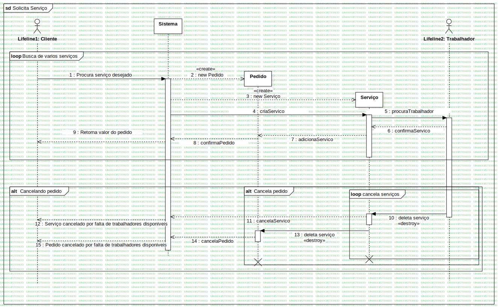

Solicita Serviço - Interaction1
UMLInteraction
Atividade 6
::
Diagrama de Sequencia
::
Solicita Serviço - loop | Para busca de serviços
::
Solicita Serviço - Interaction1
Description
none
Diagrams

Solicita Serviço
Fragments
Cancelando pedido
cancela serviços
Busca de varios serviços
Cancela pedido
Participants
Sistema
Pedido
Serviço
Lifeline1: Cliente
Lifeline2: Trabalhador
Messages
Procura serviço desejado (Lifeline1→Sistema)
new Pedido (Sistema→Pedido)
new Serviço (Sistema→Serviço)
criaServico (Sistema→Serviço)
procuraTrabalhador (Serviço→Lifeline2)
confirmaServico (Lifeline2→Serviço)
adicionaServico (Serviço→Pedido)
confirmaPedido (Pedido→Sistema)
Retorna valor do pedido (Sistema→Lifeline1)
deleta serviço (Lifeline2→Serviço)
cancelaServico (Serviço→Sistema)
Serviço cancelado por falta de trabalhadores disponiveis (Sistema→Lifeline1)
deleta serviço (Serviço→Pedido)
cancelaPedido (Pedido→Sistema)
Pedido cancelado por falta de trabalhadores disponiveis (Sistema→Lifeline1)
Properties
Name
Value
name
Solicita Serviço - Interaction1
stereotype
null
visibility
public
isReentrant
true
Owned Elements
Solicita Serviço